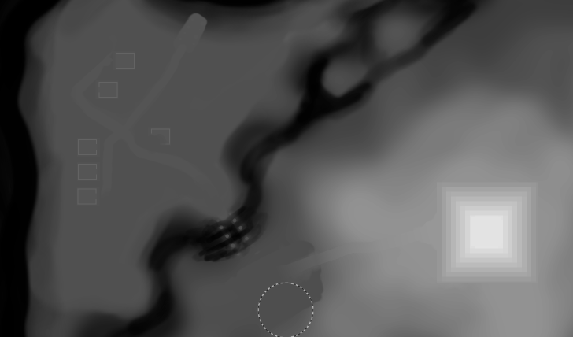
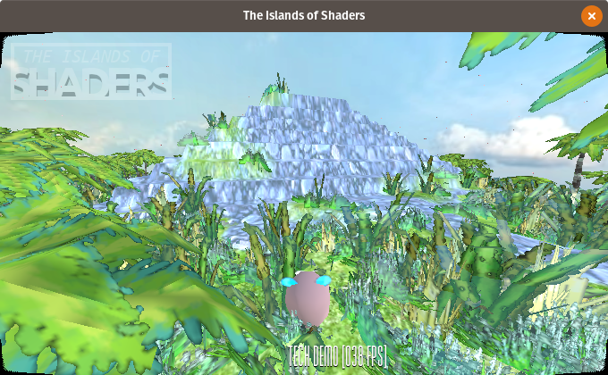
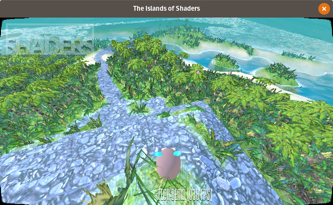

Water Shader in GodotEngine 3

Introduction
I've started my journey through the wonderful world of shaders around month ago. It's still all new to me and I'm learning. But over the days I manage to put few things together and make an awesome water shader that you all asking about. Thats why I decided to make and in-depth analysis of this one shader.
Lets start with some background. I generates terrain using height map.

It is a special texture that keeps information about height of each vertex of the terrain. White pixel is the maximum height. Black is the base of terrain. Take a look a the pyramid and river shapes.


Now the fun part. The shader.

Here are the whole shader you can look at. I start with a bunch of variables. To easily tune-up the final look and make different styles.
shader_type spatial;
uniform vec2 amplitude = vec2(1.0, 1.0);
uniform vec2 frequency = vec2(.2, .2);
uniform vec2 time_factor = vec2(2.0, 2.0);
uniform vec3 water_color = vec3(0.25, 0.27, 0.15);
uniform float water_height = 2.5;
uniform float water_clearnes = 0.4;
uniform float water_refraction = 0.014;
uniform float water_alpha = 0.7;
uniform float water_shore = 0.36;
uniform float water_color_contrast = 6.0;
We need height map sprite to known where is the land. And to find shore line.
uniform sampler2D height_map;
Here comes the first function. Height.
float height(vec2 pos, float time, float noise){
return (amplitude.x * sin(pos.x * frequency.x * noise + time * time_factor.x)) + (amplitude.y * sin(pos.y * frequency.y * noise + time * time_factor.y));
}
It takes position and time + noise. Then it calculates height using sin and random value for natural look. To make the water "move", time variable is added to the calculations.
How to get noise?
float fake_random(vec2 p){
return fract(sin(dot(p.xy, vec2(12.9898,78.233))) * 43758.5453);
}
vec2 faker(vec2 p){
return vec2(fake_random(p), fake_random(p*124.32));
}
I was using texture with random noise but then I found this awesome function. One generates random float and the second vec2.
Vertex Shader
Now combine all of this. For each vertex of the water plain I change the height.
Thats how it looks with just a water height (flat).
VERTEX.y = water_height

And now with noise.
float noise = faker(VERTEX.xz).x;
VERTEX.y = water_height + height(VERTEX.xz, TIME, noise);

Water height is added for complex levels where some water will have different height (think waterfall).
Then there is this code. To be honest I don't really understand it but it's for generating normals. We will need this for refraction.
TANGENT = normalize( vec3(0.0, height(VERTEX.xz + vec2(0.0, 0.2), TIME, noise) - height(VERTEX.xz + vec2(0.0, -0.2), TIME, noise), 0.4));
BINORMAL = normalize( vec3(0.4, height(VERTEX.xz + vec2(0.2, 0.0), TIME, noise) - height(VERTEX.xz + vec2(-0.2, 0.0), TIME, noise), 0.0));
NORMAL = cross(TANGENT, BINORMAL);
Now that the water moves we can add a little bit of color to it.
Fragment Shader
Here's where the magic happens.
vec2 uv2 = UV * -1.0;
float height = texture(height_map, uv2.xy).r;
The way I make the terrain and particles my heightmap needs to be mirrored. Then I read height value from heightmap texture.
Using height I can calculate smooth gradient from the shore to the deepest places.
float gfx = smoothstep(0.15, water_shore, height);
vec3 w_color = vec3(gfx, gfx, gfx) * water_color_contrast;
New color is brighter when closer to the shore. To make it visible like in my example I added high contrast value.
Then comes all the parameters of the material.
ALBEDO = w_color;
ROUGHNESS = gfx;
METALLIC = 0.8;
SPECULAR = gfx;
ALPHA = 1.0 - clamp(gfx, water_alpha, 1.0);

And last we have refraction effect. I copied the code form the YouTube tutorial where the guy says he's copied it form yet another one. So it's a shared snippet.
vec3 ref_normal = normalize( mix(VERTEX,TANGENT * NORMALMAP.x + BINORMAL * NORMALMAP.y + VERTEX * NORMALMAP.z, NORMALMAP_DEPTH) );
vec2 ref_ofs = SCREEN_UV + ref_normal.xy * water_refraction;
EMISSION += textureLod(SCREEN_TEXTURE, ref_ofs, ROUGHNESS * water_clearnes).rgb * (1.0 - ALPHA);
ALBEDO *= ALPHA;
ALPHA = 1.0;

It takes all the light that comes and calculates refracted position. Then resets alpha as water is already fully rendered and needs to overlap real ground. The good part of it is that it just works :)
That's the final result:


I hope I could help and inspire you to make your own water shader.
Stuff
All the sources are available at the GitHub. Also the whole tech demo project.
I was using code from those sources:
- Godot Game Engine - Basic Water (Spatial-) Material by DerDieDasMedia
- Godot 3D shader tutorial : Water in 3D by Bastiaan Olij
Leave your comments and suggestions at /r/godot/ post. Thanks!
Tags: graphics, shaders, gamedev, godot-engine